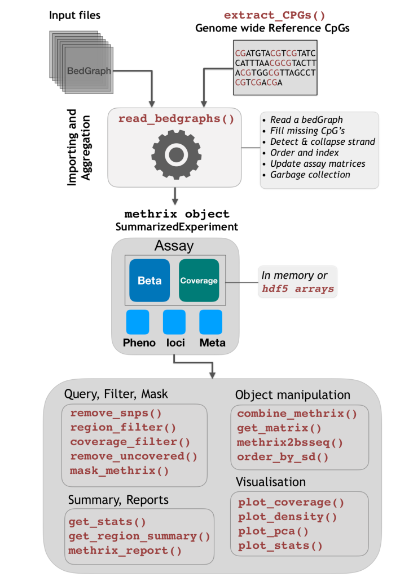

Fast and efficient summarization of generic bedGraph files from Bisufite sequencing
Introduction
Bedgraph files generated by BS pipelines often come in various flavors. Critical downstream step requires aggregation of these files into methylation/coverage matrices. This step of data aggregation is done by Methrix, including many other useful downstream functions.
Package overview and usage functions
For more detailed documentation, see the vignette.
A examplary complete data analysis with steps from reading in to annotation and differential methylation calling can be find in our best practice pipeline.

Summary:
- Faster summarization of generic bedGraph files with
data.tableback-end - Fills missing CpGs from reference genome
- Vectorized code (faster, memory expensive) and non-vectorized code (slower, minimal memory)
- Built upon
SummarizedExperimentwith custom methods for CpG extraction, sub-setting, and filtering - Easy conversion to bsseq object for downstream analysis
- Extensive one click interactive html report generation
- Supports serialized arrays with
HDF5ArrayandsaveHDF5SummarizedExperiment - Outputs to UCSC style bedgraph tracks and bigWig formats
Updates:
see here
Installation
#For stable version which works with specific BioC versions BiocManager::install("methrix") #For developmental version from GitHub BiocManager::install("CompEpigen/methrix")
If you are installing from BioConductor make be noted that some of the methrix dependencies such as SummarizedExpriment requires your R version to the newest. Should you fail to install from BioC due to version dependenices, install from from GitHub which is tolerant to BioC versions.